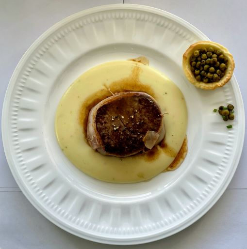
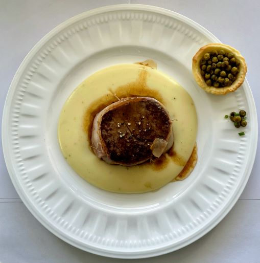

Je m'appelle Esteban Chavrier, j'ai 17 ans, en Terminale génerale à Sainte-Marie Lyon. Je suis né dans une famille qui a toujours fais ses propres plats et dès mon plus jeune âge je mettais la main à la pate. C'est avec ma grand mère que je confectionnais des petits plats pour toute la famille. Années après années j'ai commencé à refaire de mon plein gré des plats pour mes parents. Puis cette passion c'est un peut perdu mais cet octobre 2021 j'ai repris la cuisine. J'ai exposé mes création sur un compte instagram (estebanc_chav) qui retrace les plats que me tiennent à coeur. C'est ainsi, après beaucoup de travail sur moi que j'ai décidé d'en faire mon metier.
 
